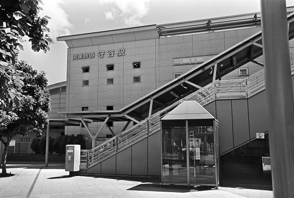

TX15_つくばｴｸｽﾌﾟﾚｽ KJ08_常総線
TX 守谷駅 Moriya
柏たなか駅
←← つくばｴｸｽﾌﾟﾚｽ →→
みらい平駅
南守谷駅
←← 関東鉄道常総線 →→
新守谷駅
2018/12/20 ﾍｷｻｰRF ｶﾗｰｽｺﾊﾟｰ25mm ｱｸﾛｽ

2018/5 ﾐﾉﾙﾀCLE 35mm ｱｸﾛｽ
2018/5 ﾐﾉﾙﾀCLE 35mm ｱｸﾛｽ
2018/5 ﾐﾉﾙﾀCLE 35mm ｱｸﾛｽ
2018/5 ﾐﾉﾙﾀCLE 35mm ｱｸﾛｽ
戻る
ﾎｰﾑ